Cephi
Cephi’s an otherworldly wonderer, blessed with lepidopterativism on a particularly uncanny version of Earth . She was called to this version of Mars by the wishes of the Concrete_Forest. Cephi’s body was reshaped by their desires, but she’s escaping that and reclaiming her body for her self. Cephi is gender euphoria and forgetful forgiveness! She’s mostly a nudist aside from sometimes masks, body paint, cool things in her hair.
She dreams of greener, slower things.
She remembers being born on Earth, senses that things are really off - the 25 hour days, the chaotic twin moon cycles discoordinated from the menstrual cycle. She has a deep-seeded-sense-memory that Luna might be reborn, maybe, or sung into a closer orbit.
Cephi has a tail coming from her crotch, ending in an eye that shows Luna’s current phase. She undergoes different stages of a memory/rebirth cycle in sync with the lunar phases.
By the light of the Full Moon, her body is translucent like a glass frog. She has no mouth, but she can take off her head and dance with it. Her slender feather/antenna tail curls around her shoulders expressively. Her crotch blooms with aposematic wings of a luna moth/tiger flower. Cephi is at peak memory-loss! She sees a staircase of moonlight and follows it across the saltpan, almost every time finding her way to Enyo. When an anxious archivist, concerned with remembering everything, meets a blank slate, what would they talk about? Each time Enyo could try out a different script, be a different person!
One night her usual wandering is disrupted as she meets Rain on the path.
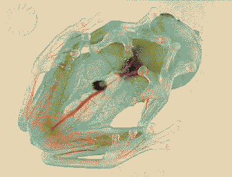 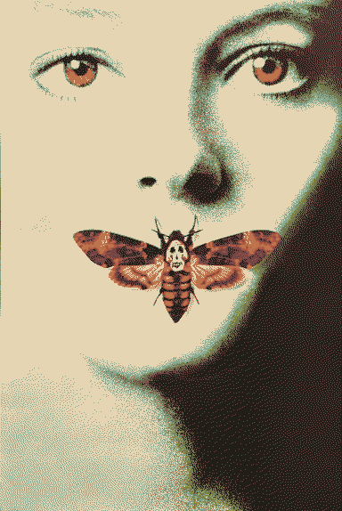 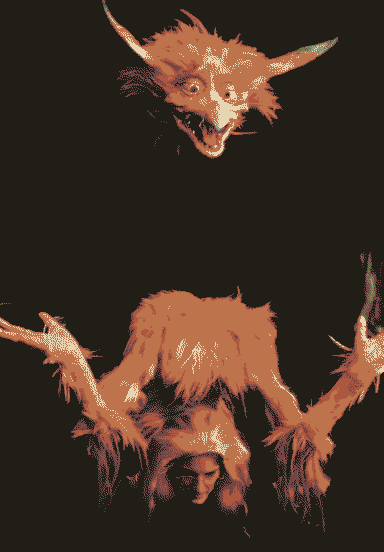 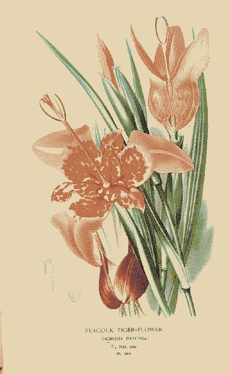 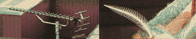 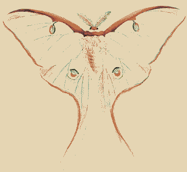 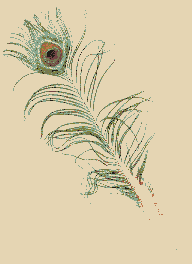
By the light of the New Moon, her body grows iridescent RGBA fur. The memories of her traumatic birth show on her body. A scar-seam is illuminated on her face, to tear along when she needs to scream. Her tail appears like gynaecological prongs/wire growing around inverted hermaphroditic sex organs, all dragging heavily behind her and calcifying.
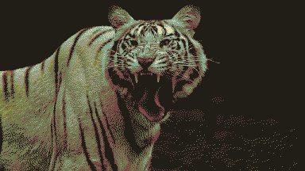 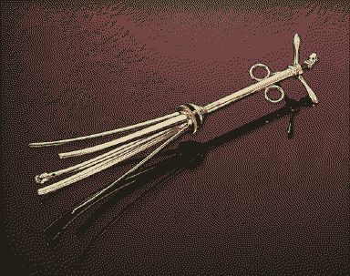 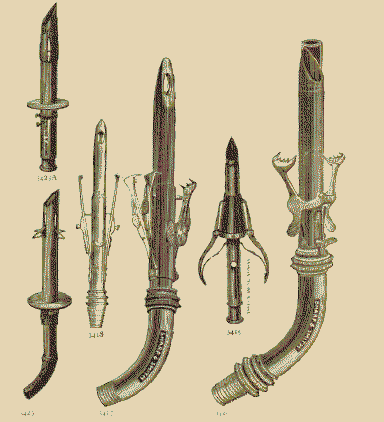 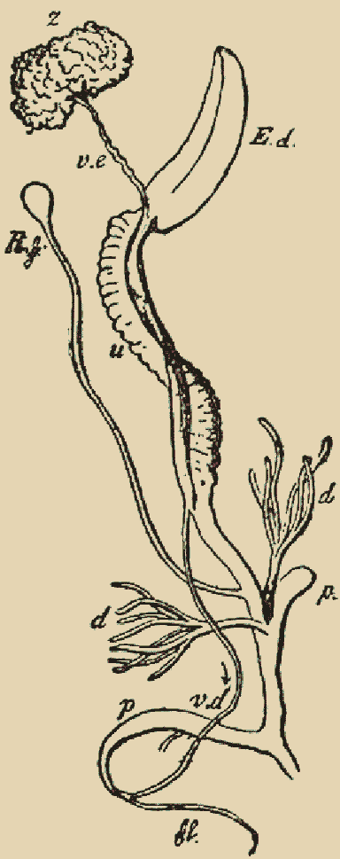